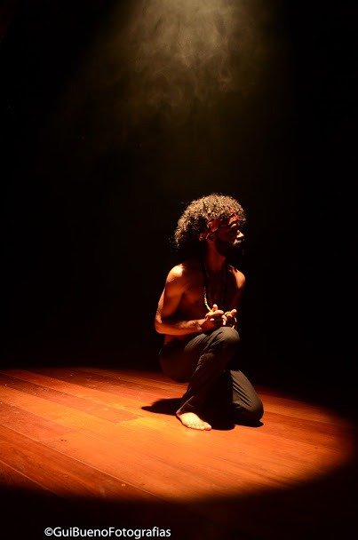
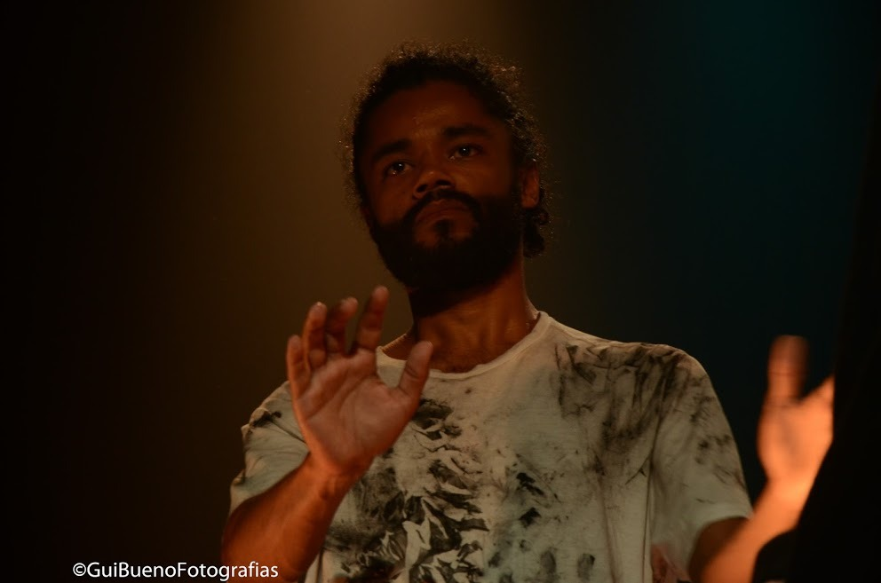
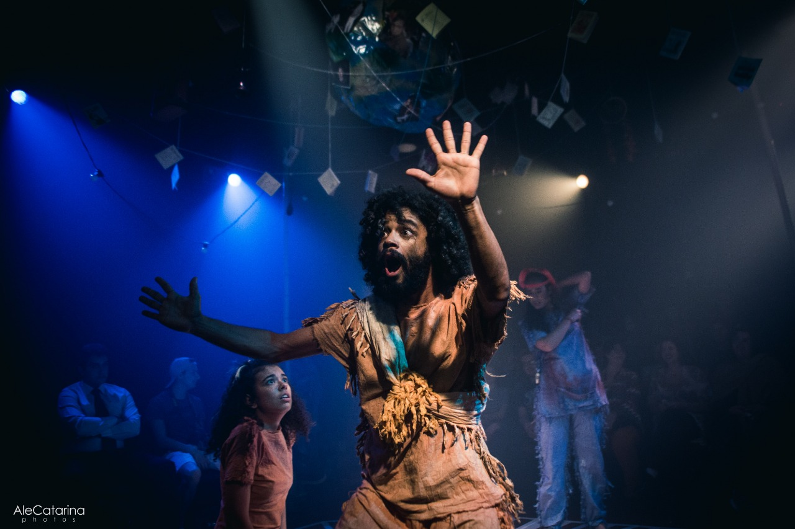
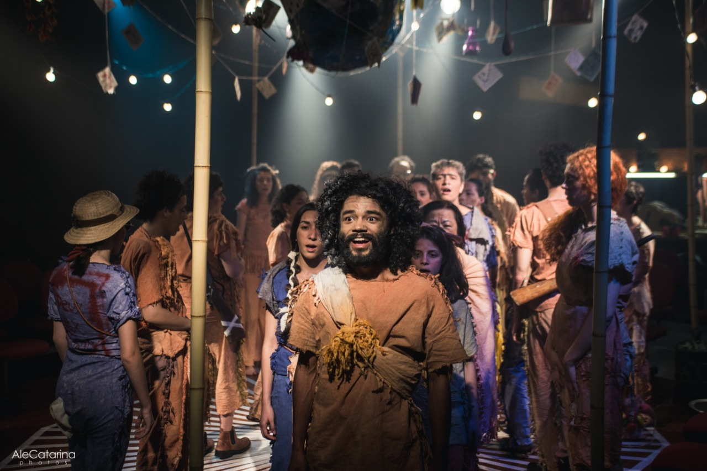
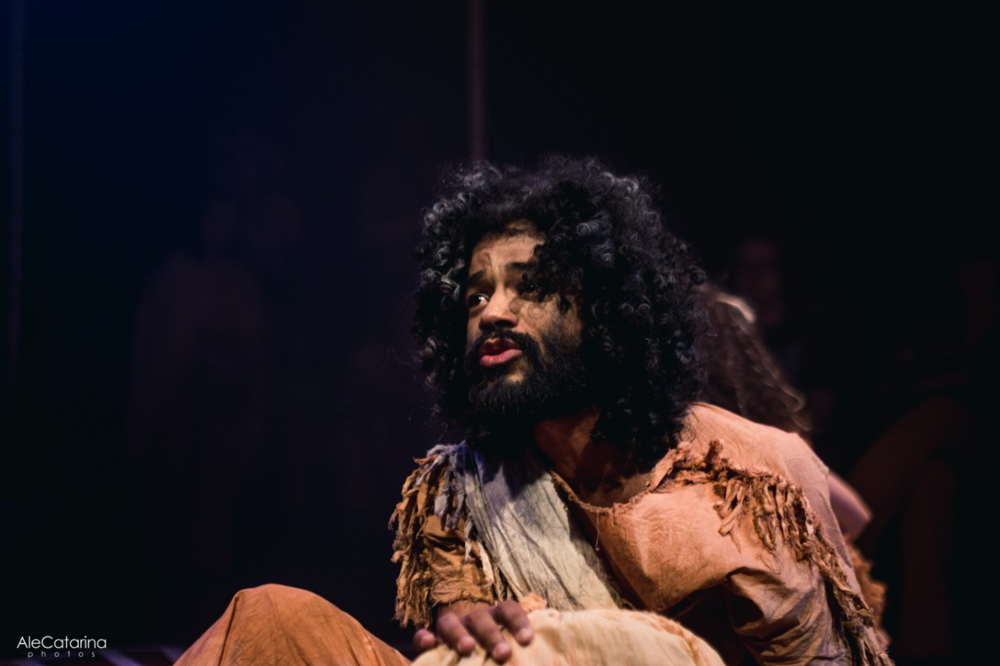
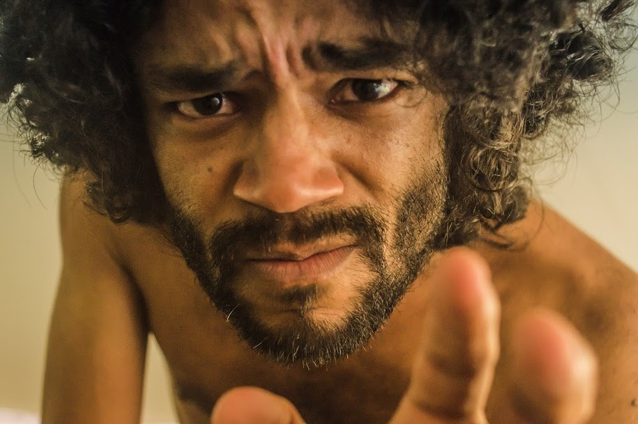
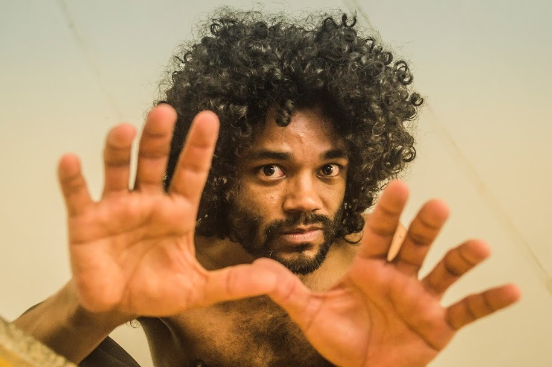
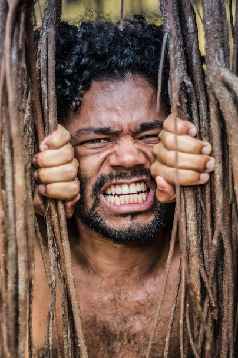
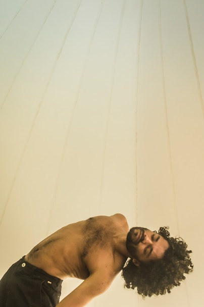

Be True – Com Ana Paula Dias
Instituto Criar de Tv, Cinema e Novas mídias
03/2020 – Workshop Modulo I Metodo Meisner
Curso técnico de Áudio para cinema
Introdução ao Método Meisner de interpretação.
06/2009 – 06/2010 – Curso de captação e mixagem de som para cinema.
ESPETÁCULOS
As aventuras de Ripió Lacraia - Ator
Nada Novo Sob o Sol - Ator
06/2019
11/2019
Personagem: Padre Ripió e Velho Ribano
Personagem: Marido
Local: Casa de Teatro das Utopias
Local: Casa de Teatro das Utopias
Direção: André Latorre
Direção: Paulo Oséas
Texto: Chico de Assis
Texto: Textos Bertold Brecht
Produção: Faculdade Paulista de Artes
Produção: Faculdade Paulista de Artes
Nada Novo Sob o Sol


As aventuras de Ripió Lacraia


Ensaio fotografico - Fotos Lucas Gonzales



